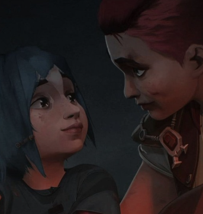
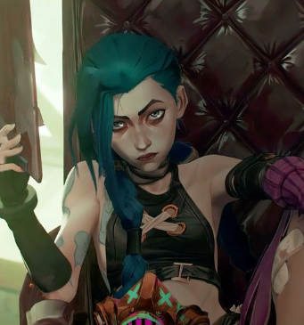
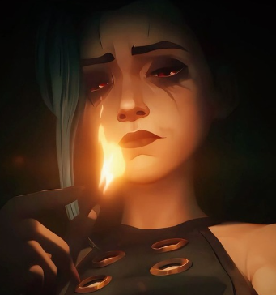

A protagonista desta história, e também o centro de todo o caos que nasce em Piltover.
Linha Temporal

O Mundo de Powder
Powder, uma jovem insegura de Zaun, idolatra sua irmã Vi. Após uma explosão acidental e a morte de seus amigos, Vi abandona Powder. Silco a acolhe, e a dor transforma Powder na perigosa Jinx.

A Queda para o Caos
Sob a influência de Silco, Jinx abraça o caos e a destruição, enquanto Vi, após anos presa, tenta resgatar a irmã. As ações de Jinx agravam o conflito entre Zaun e Piltover, e sua sanidade se deteriora.

A Solidão do Caos
Jinx enfrenta seu passado ao reencontrar Vi. Dividida entre o caos e a reconciliação, ela mata Silco, mas continua perdida. Consumida pela loucura, Jinx escolhe o caos, deixando Powder para trás.